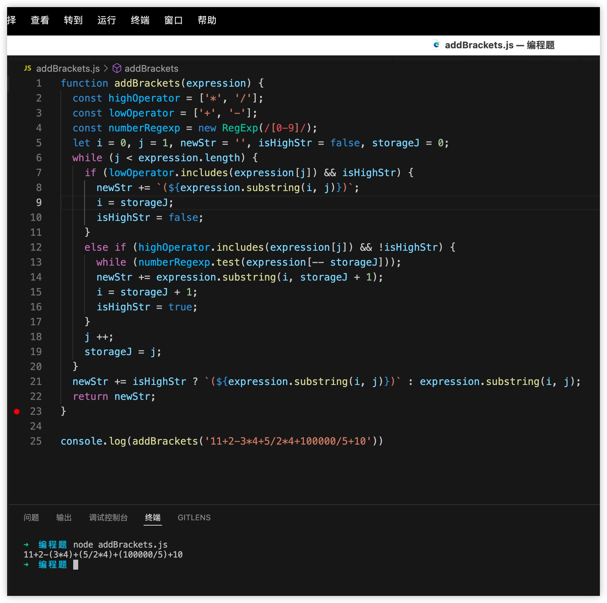

根据运算优先级添加括号
题目
现已知一个字符串是由正整数和加减乘除四个运算符(+ - * /)组成。
例如存在字符串 const str = '11+2-3*4+5/2*4+10/5'，现在需要将高优先级运算，用小括号包裹起来，例如结果为 '11+2-(3*4)+(5/2*4)+(10/5)'。注意可能会出现连续的乘除运算，需要包裹到一起。
请用 javascript 实现这一过程
参考答案
介绍一种只需遍历一次的实现方式，思路比较简单，主要用到了2个临时变量，分别用于记录当前是否在高优先级运算范围和临时值，然后根据不同优先级的运算符进行不同的处理操作。
具体的代码如下：
```js<br> function addBrackets(expression) {<br> const resultArr = []
// 定义运算符<br> const symbolArr = ['+', '-', '*', '/']
// 定义高优先级运算符<br> const highLevelSymbolArr = ['*', '/']
// 判断某个字符串是否是运算符<br> const isSymbolFn = (str) => symbolArr.includes(str)
// 判断某个字符串是否是高优先级运算符<br> const isHighLevelSymbolFn = (str) => highLevelSymbolArr.includes(str)
// 输入表达式的长度<br> const expLen = expression.length
// 标记当前的遍历是否处于高优先级运算符范围<br> let isInBracket = false<br> // 记录临时值<br> let currentNum = ''
for (let i = 0; i < expLen; i++) {<br> const isSymbol = isSymbolFn(expression[i])<br> const isHighLevelSymbol = isSymbol && isHighLevelSymbolFn(expression[i])
// 处理当前字符是运算符的场景<br> if (isSymbol) {<br> //处理当前字符是高优先级运算符<br> if (isHighLevelSymbol) {<br> // 如果当前没有被标记为高优先运算符，就在前面加个括号<br> if (!isInBracket) {<br> currentNum = '(' + currentNum<br> }
// 修改标记状态<br> isInBracket = true<br> currentNum += expression[i]<br> } else {<br> // 普通运算符
if (isInBracket) {<br> // 如果之前已经在高优先级运算符范围，就需要标记结束<br> resultArr.push(currentNum + ')')<br> isInBracket = false<br> } else {<br> resultArr.push(currentNum)<br> }<br> resultArr.push(expression[i])<br> currentNum = ''<br> }<br> } else {<br> // 如果是数字，就直接进行记录<br> currentNum = currentNum + expression[i]<br> }<br> }
if (currentNum) {<br> resultArr.push(currentNum + (isInBracket ? ')' : ''))<br> }
return resultArr.join('')<br>}
```
另外还可以使用滑动窗口的思路来实现：

使用正则实现（2022/10/30更新）
有小伙伴提供了一种正则表达式的实现方式，供大家参考：
let text = '11+2-34+5/24+10/5+10/512';
text.match(/([0-9]{1,}[*|/]){1,}[0-9]{1,}/g).forEach((item)=>{
text = text.replace(item,`(${item})`)
})
console.log(text); // '11+2-34+(5/24)+(10/5)+(10/512)'以上答案由“前端面试题宝典”收集、整理，PC端访问地址： https://fe.ecool.fun/